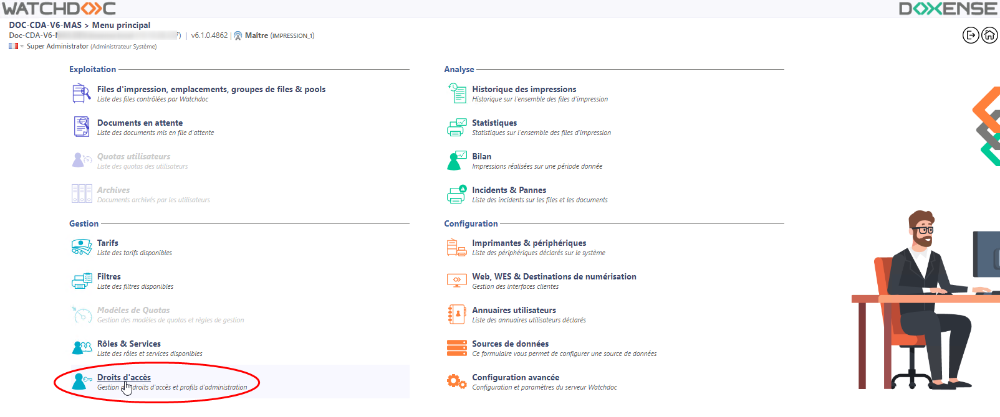
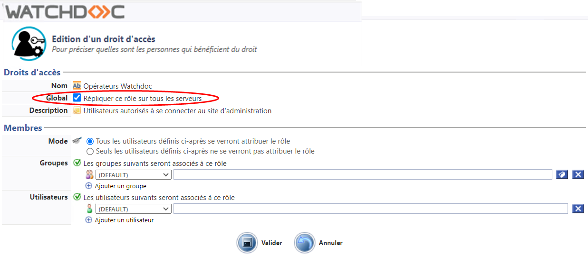
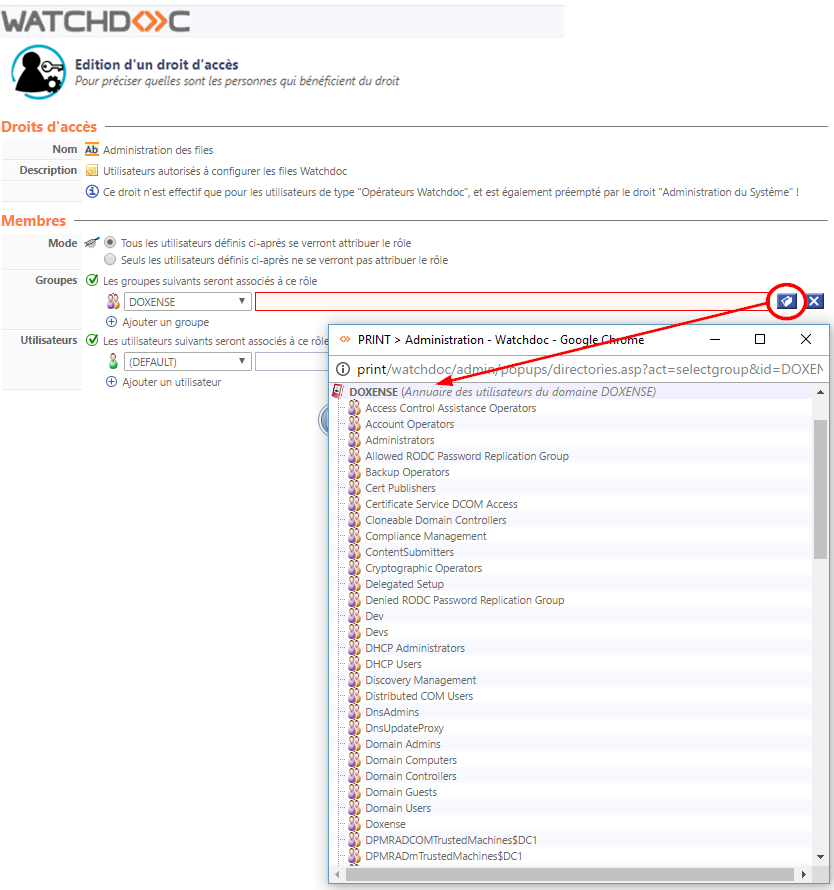
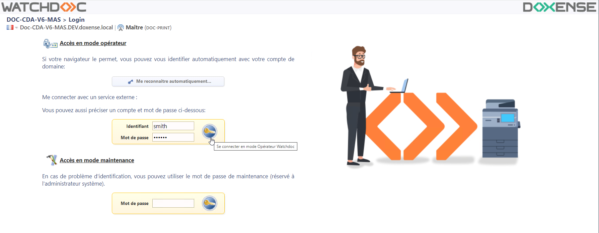
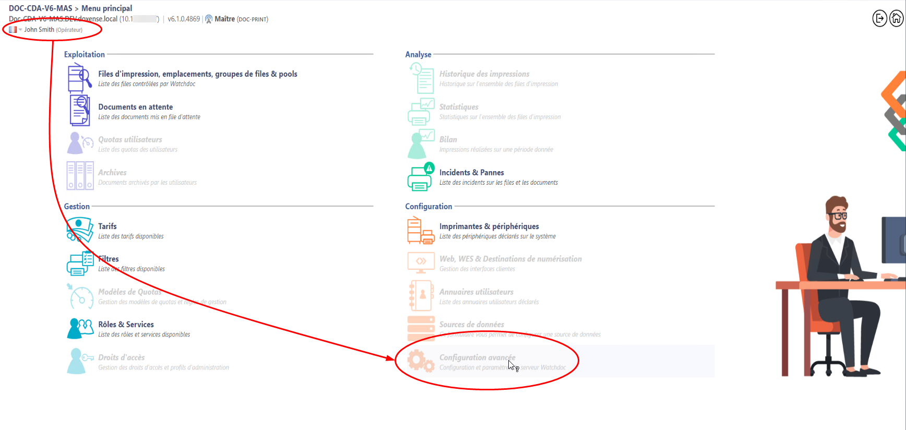
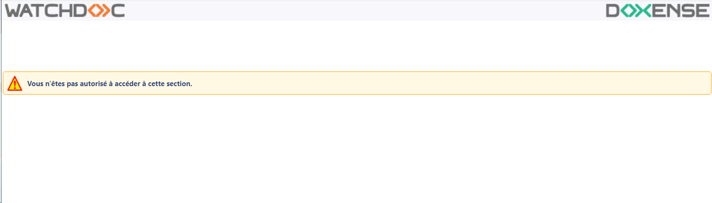

Accéder à l'interface de configuration
-
Depuis le Menu principal de l'interface d'administration,
-
dans la section Gestion, cliquez sur Droits d'accès :

.
è Vous accédez à la liste Droits d'accès de Watchdoc.
Configurer un droit ou un rôle d'administration
Ce paramétrage permet d'attribuer à un rôle un ou plusieurs droits d'administration dans Watchdoc.
Pour configurer un droit :
-
dans la liste Droits spéciaux ou Rôles d'administration, cliquez sur le bouton
 Modifier ce rôle correspondant au rôle que vous souhaitez modifier ;
Modifier ce rôle correspondant au rôle que vous souhaitez modifier ; -
Dans la section Droits d'accès figurent le Nom et la Description du droit ou du rôle.
Dans une configuration en Domaine (maître/esclaves), si vous configurez ce droit/rôle sur le serveur maître et que vous souhaitez le répliquer sur l'ensemble des autres serveurs, cochez la case Global :
-
Dans la section Membres > Mode, cochez le bouton radio :
-
tous les utilisateurs se verront attribuer ce rôle : si vous souhaitez inclure les utilisateurs dans le rôle ;
-
seuls les utilisateurs définis ne se verront pas attribuer ce rôle : si vous souhaitez exclure les utilisateurs du rôle;
-
-
dans la section Groupes ou dans la section Utilisateurs, sélectionnez dans la liste un annuaire dans lequel se trouve le groupe/utilisateur que vous voulez ajouter ;
-
cliquez sur le bouton
 pour parcourir l'annuaire sélectionné afin d'y choisir le groupe/utilisateur à ajouter :
pour parcourir l'annuaire sélectionné afin d'y choisir le groupe/utilisateur à ajouter :
-
une fois le choix effectué, cliquez sur
 Ajouter un groupe ou un utilisateur si vous souhaitez que le rôle intègre plusieurs groupes ou plusieurs utilisateurs ;
Ajouter un groupe ou un utilisateur si vous souhaitez que le rôle intègre plusieurs groupes ou plusieurs utilisateurs ; -
au terme de votre paramétrage, cliquez sur
 pour valider le droit d'accès défini.
pour valider le droit d'accès défini.
èDès qu'un rôle ou un droit autre que celui du Super Utilisateur a été attribué à un utilisateur (ou groupe), des champs d'authentification dédiés aux différents rôles s'affichent dans l'interface de connexion du site web d'administration :

Dès lors, certaines sections du menu d'administration peuvent être inaccessibles (grisées) :

Par ailleurs, si un utilisateur tente d'accéder à une interface d'administration par le biais d'une URL sans y être habilité (attaque de type CSRF Cross-Site Request Forgery. L’objet de cette attaque est de transmettre à un utilisateur authentifié une requête HTTP falsifiée qui pointe sur une action interne au site, afin qu'il l'exécute sans en avoir conscience et en utilisant ses propres droits. (Source :https://fr.wikipedia.org/wiki/)), il reçoit un message l'informant qu'il ne dispose pas des droits d'accéder à l'interface.
Cross-Site Request Forgery. L’objet de cette attaque est de transmettre à un utilisateur authentifié une requête HTTP falsifiée qui pointe sur une action interne au site, afin qu'il l'exécute sans en avoir conscience et en utilisant ses propres droits. (Source :https://fr.wikipedia.org/wiki/)), il reçoit un message l'informant qu'il ne dispose pas des droits d'accéder à l'interface.
De même, dès que les droits d'un utilisateur connecté sont modifiés, l'utilisateur est déconnecté et reçoit le message l'informant qu'il ne dispose pas des droits d'accéder à l'interface :
